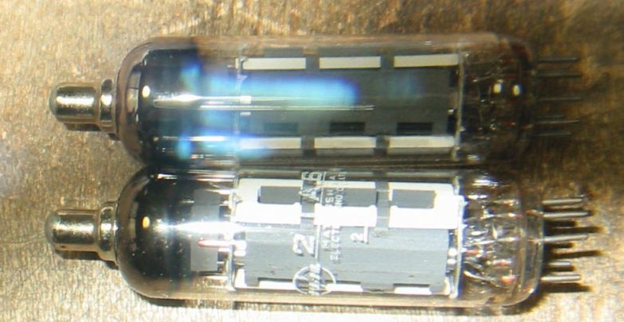
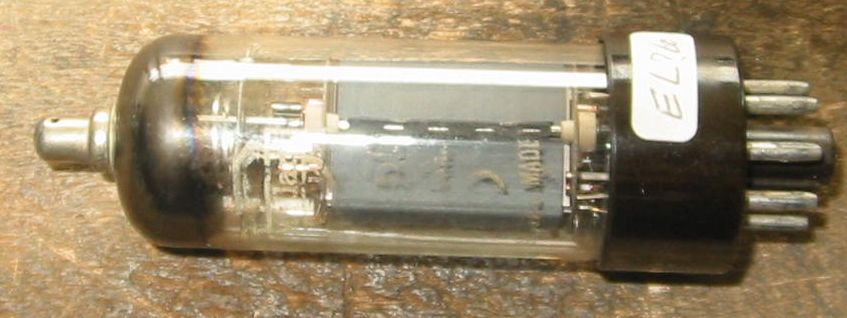

25E5などのヨーロッパ管について
ここでは２５E5など松下電器以外の日本メーカがあまり製造しなかった
ヨーロッパ系の球について紹介します。
松下の25E5
HITACHIの25E5を見つけました。6G-B3Aと外観は全く同じです。
松下の50JY6
Amperex 6GB5/EL504
Ef/If=6.3V/1.38A、Ep/Pp=275V/17w、Esg/Psg=275v/5W、Gm=?、μ2=? (RCA)
MAZDA PL300/35FN5
松下の35FV5/PL136
Ef/If=35V/0.3A、Ep/Pp=250V/16w、Esg/Psg=250v/4.5W、Gm=20000μ、μ2=5
br>
松下の29KQ6
松下の21A6/PL81 9pinミニチュア管です。管内の白く見えるのは碍子。
Ef/If=21.5V/0.3A、Ep/Pp=250V/8w、Esg/Psg=250v/4.5W、Gm=11000μ、μ2=5.5

TELEFUNKEN EL81 PL81とヒータ電圧が違い、6.3Vです。

Mullardの不明管です。プレートとマイカの間に碍子が入っています。

TV水平出力管のページに戻る